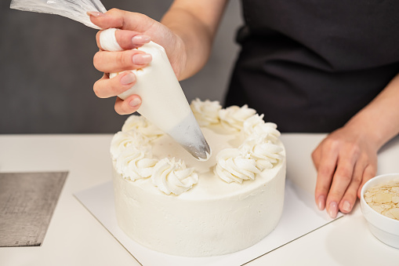

Decorating
Here’s How to Decorate a Cake Like a Pro
To create beautiful cakes, there are a few decorating tools you’ll want to have in your kitchen.
- Offset spatulas: These spatulas are game changers, especially when it comes to cake decorating. Large offset spatulas are perfect for adding even amounts of frosting in between each layer of cake. The smaller offset spatulas can help you get smooth finishes and elegant swirls on the exterior of your cake.
- Bench scraper: To give the outside of your cake a smooth finish, you’ll want a bench scraper. This tool helps smooth away any imperfections. There are different types of bench scrapers that result in various cake textures. These are called cake combs.
- Piping bags and tips: For fancy finishes, you’ll want to invest in piping bags and a few different pastry tips. Use these for writing on cakes, making flowers and other decorative elements.
- Cake turntable: While you can decorate your cake right on a serving plate, the job goes a bit quicker with a turntable. This spinning tray allows you to rotate the cake as you frost so your frosting is even and perfectly swirled.
Step 1: Level the Layers
When making layer cakes, it’s important that each layer is level and flat so they are stable and easy to stack. To level the cake, allow the layers to cool completely. A warm cake will crumble easily and frosting warm cakes results in runny frosting. Though it is optional, refrigerating the cake before frosting and leveling allows it to become firmer and easier to work with. For even, level layers, place the cake on a flat surface. Using a long, serrated knife, cut the dome off the cake. Work slowly and get down to eye level with the cake. This will help you make an even cut.
Step 2: Stack the Cakes
Next, you’ll stack your cakes. Put your first layer in place on your serving dish or cake stand. If you’d like, spread a small dollop of frosting onto your cake plate before laying down your first layer—it’ll help keep your cake from moving. Then, spread your filling on top with a spatula and top with your next layer. Continue with a third and fourth layer, until you are done.
Step 3: Add the Crumb Coat
A crumb coat is a thin first layer of frosting applied to the exterior of the cake that seals in the crumbs. After your cake has cooled, apply the layer of frosting without worry that crumbs are getting mixed into it. Allow the crumb coat to set and those crumbs will be trapped in the first layer of frosting, so they don’t mix into your final decorative layer. To add a crumb coat, use an offset spatula and apply the frosting, spreading it as thinly as possible. Make sure you get the sides and the top, then put the coated cake into the freezer for 15 to 30 minutes. This allows the frosting to firm up before adding more decorations.
Step 4: Smooth It Out
After your crumb coat is set, you can start giving your cake its finishing touches. Start by using an offset spatula to frost the top of the cake, starting from the center. For exceptionally smooth frosting, dip the spatula into hot water, then dry it. The warm spatula will really help smooth the frosting out by melting any butter or shortening in your recipe. You can then move onto the sides of the cake, using the same hot water method. To get a nice smooth finish, be sure to keep cleaning off the spatula as you go. A bench scraper also works well for the sides, too. With a little bit of effort, you’ll have a perfectly smooth, flat finish in no time.
Choose the Right Frosting
Not all frostings are suitable for filling and topping cakes, but the good news is there are still a lot of delicious options. Buttercreams of all kinds (Italian buttercream, French buttercream, German buttercream, American buttercream and flavored buttercreams) work well for decorating. You can also use cream cheese frosting and ermine frosting. Essentially, you want a thicker frosting that can hold up under the weight of the layers of cake and will also stick to the sides. In general, when it comes to decorating you want to avoid whipped cream frosting and very thin frostings.
Piping
Though you can use a ziplock bag, nothing quite compares to the real-deal piping bags—either the disposable kind or reusable pastry bags. To use a pastry bag, start by snipping off the tip. Then insert the tip of your choice inside and make sure it’s pressed snugly in the bottom. Put the bag in a tall glass and fold the end over the lip of the glass. Scoop up your frosting with a spatula and press it into the bottom of the piping bag. Once filled, squeeze the frosting down into the bag and twist the top (you only want frosting coming out of the tip, not the back end). After your bag is prepped, you can experiment with pressure and piping techniques on a scrap of waxed paper or a plate before moving to your cake.
Drip Method
There’s something about drip cakes that is just so cool. What’s even better is this decorating technique is surprisingly simple. To start, frost your cake and give it a smooth finish using a bench scraper. Then make a ganache with chocolate or baking chips. When the ganache has cooled slightly, spoon it over the top of your cake. Using the back of your spoon, push the ganache to the edges of the cake and watch it slowly drip down the sides to form tempting chocolaty drips.